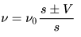
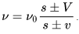
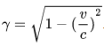
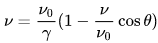

Ситуація, коли рухається спостерігач, загалом не аналогічна руху джерела, бо хвилі розповсюджуються в певному середовищі. У такому випадку існують три системи відліку, пов'язані з середовищем, джерелом і спостерігачем.
Ефект До́плера — явище зміни частоти хвилі, яку реєструє приймач, викликане переміщенням джерела або приймача.
Ефект названий на честь австрійського фізика Крістіана Доплера.
Виходячи з власних спостережень за хвилями на воді, Доплер припустив, що подібні явища відбуваються в повітрі з іншими хвилями. На підставі хвильової теорії він у 1842 році вивів, що наближення джерела світла до спостерігача збільшує спостережувану частоту, віддалення зменшує її. Доплер теоретично обґрунтував залежність частоти звукових і світлових коливань, що сприймаються спостерігачем, від швидкості і напряму руху джерела хвиль і спостерігача відносно один одного.
Доплер використав цей принцип в астрономії і провів паралель між акустичним і оптичним явищами. Він вважав, що всі зорі випромінюють біле світло, однак колір змінюється через їх рух до або від Землі (насправді цей ефект, для розглянутих Доплером подвійних зір, дуже малий). Хоча зміни в кольорі неможливо було спостерігати з обладнанням того часу, теорія про звук була перевірена вже в 1845 році. Тільки відкриття спектрального аналізу дало можливість експериментальної перевірки ефекту в оптиці.
У разі дуже високої швидкості відносного руху (яка становить значну частку швидкості світла) ефект описують з урахуванням релятивістського уповільнення часу.
Ілюстрація зростання частоти в напрямку руху й зменшення в протилежному напрямку:
У 1845 році голландський метеоролог, іноземний член-кореспондент Петербурзької академії наук Христофор Бейс-Баллот (1817—1890) вирішив перевірити гіпотезу Доплера. Він найняв паровоз із вантажною платформою, посадив на платформу двох сурмачів і попросив їх тримати ноту соль (два сурмачі були потрібні для того, щоб один із них міг набирати повітря, поки інший тягне ноту, і таким чином звук би не уривався).
На пероні одного полустанка між Утрехтом і Амстердамом Бейс-Баллот розмістив декількох музикантів без інструментів, але з абсолютним музичним слухом. Після чого паровоз став з різною швидкістю тягати платформу з сурмачами повз перон із слухачами, а ті відзначали, яку саме ноту вони чують. Потім спостерігачів змусили їздити, а сурмачі грали, стоячи на пероні. Досліди тривали два дні, в результаті чого був доведений ефект, відкритий Доплером.
Пряме підтвердження формул Доплера для світлових хвиль було отримано Г. Фогелем у 1871 році шляхом порівняння положень ліній Фраунгофера в спектрах, отриманих від протилежних країв сонячного екватора. Відносна швидкість країв, розрахована за значеннями виміряних Г. Фогелем спектральних інтервалів, виявилася близька до швидкості, розрахованої за зміщенням сонячних плям.
де ν частота хвилі, яку фіксує нерухомий спостерігач, ν0 — частота коливань у рухомому джерелі, s — швидкість розповсюдження хвилі, u — швидкість джерела. Знак залежить від напрямку руху джерела відносно спостерігача.
Частота хвилі, яку фіксує спостерігач, зростає, якщо джерело рухається до нього, й зменшується, якщо джерело рухається від спостерігача.
Ситуація, коли рухається спостерігач, загалом не аналогічна руху джерела, бо хвилі розповсюджуються в певному середовищі. У такому випадку існують три системи відліку, пов'язані з середовищем, джерелом і спостерігачем.
При нерухомому відносно середовища джерелі спостерігач, який рухається із швидкістю V, фіксуватиме хвилі на частоті
У випадку, коли рухаються і джерело й спостерігач,
У випадку електромагнітних хвиль у вакуумі ситуація змінюється, оскільки середовища розповсюдження хвилі не існує. Відносна швидкість джерела й спостерігача залишається єдиною характеристикою руху.
де c — швидкість світла.
Поняття доплерівського зсуву спектральних ліній запровадив французький фізик Фізо 1848 року, а експериментально його виявили 1876 року.
У разі дуже високої швидкості відносного руху (яка становить значну частку швидкості світла) ефект описують з урахуванням спеціальної теорії відносності.
Враховується кут θ між вектором швидкості (v) та хвильовим вектором хвилі (k), а також релятивістське уповільнення часу, яке визначається множником γ:
Тоді ефект визначається за формулою:
Коли рух джерела та спостерігача відбувається назустріч один одному (θ=0) або обо одне від одного (θ=π), кажуть про поздовжній ефект Доплера, який розглянуто вище. Якщо θ=π/2, то кажуть про поперечний ефект Доплера. Він визначається тільки релятивістським уповільненням часу. Експериментально поперечний ефект Доплера виявили американські фізики Г. Айвс та Д. Стіуел 1938 року.